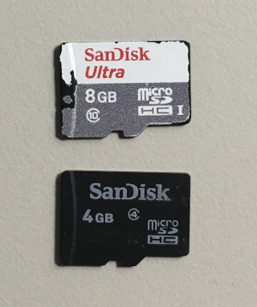
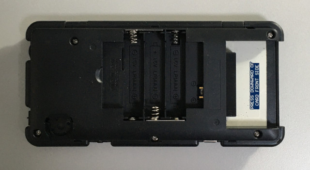
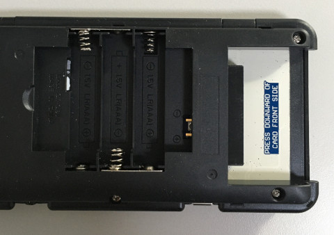
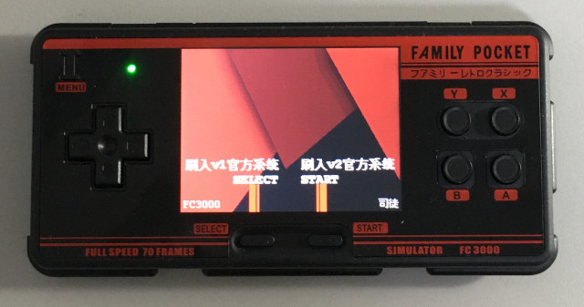
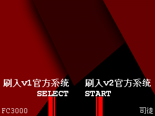
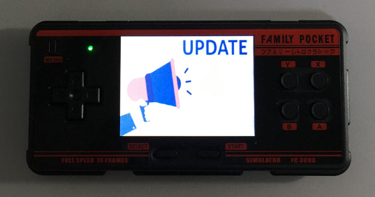
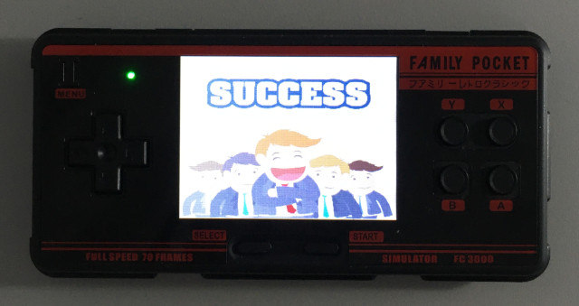
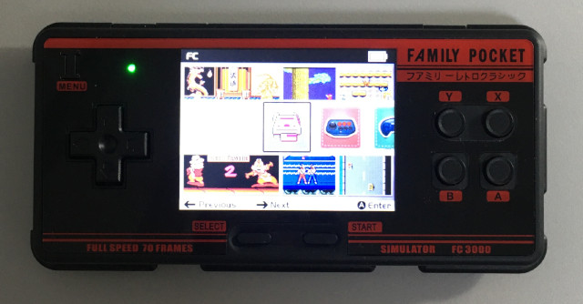
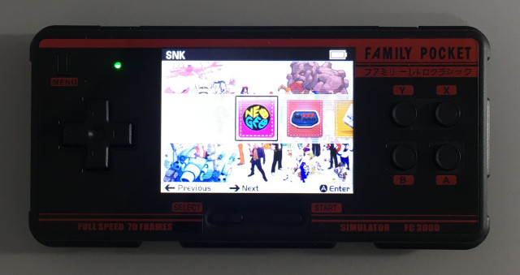

Steward
分享是一種喜悅、更是一種幸福
掌機 - FC3000 - V1、V2升級刷機教學
參考資訊：
https://github.com/steward-fu/website/releases/tag/fc3000
步驟如下：
1. 下載fc3000_v1_v2_flash.img.7z
2. 解壓縮後，將fc3000_v1_v2_flash.img直接燒錄到MicroSD
$ sudo dd if=fc3000_v1_v2_flash.img of=/dev/sdX bs=1M && sync && sync
64+0 records in
64+0 records out
67108864 bytes (67 MB, 64 MiB) copied, 6.40316 s, 10.5 MB/s
P.S. sdX為當下的MicroSD位置
司徒目前只有測試SanDisk記憶卡

3. 移除卡帶

4. 插入剛剛燒錄完成的MicroSD

5. 插入電池，開機上電
按下SELECT：刷入v1版本官方系統(8大模擬器)
按下START：刷入v2版本官方系統(10大模擬器)


6. 更新時間大約3分鐘

7. 完成

v1版本系統(8大模擬器)

v2版本系統(10大模擬器)
